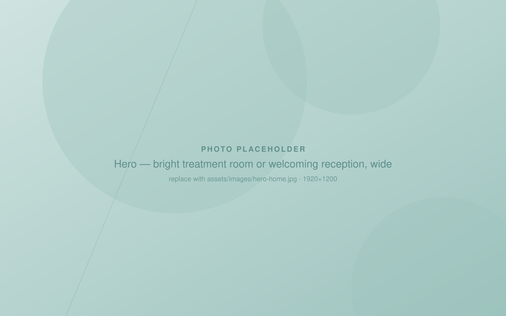
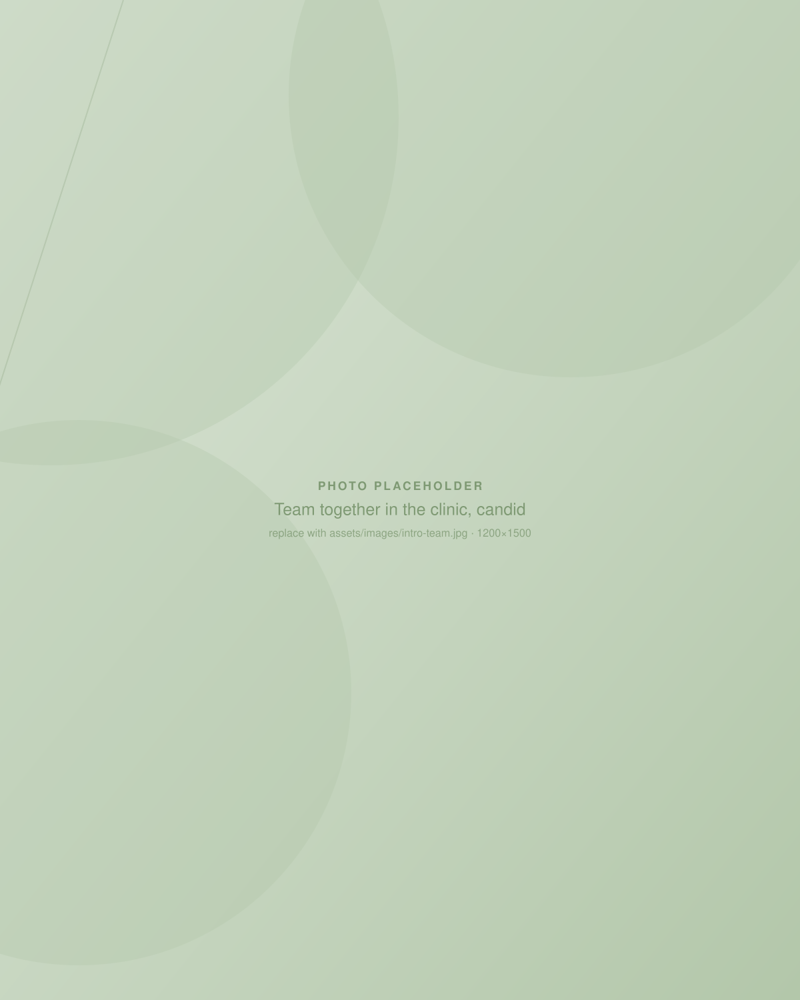
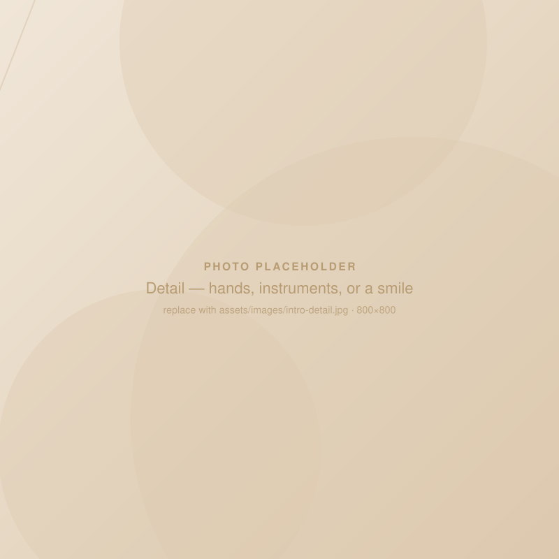
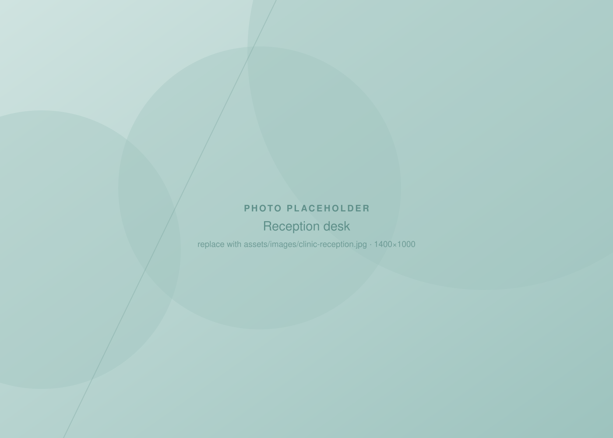
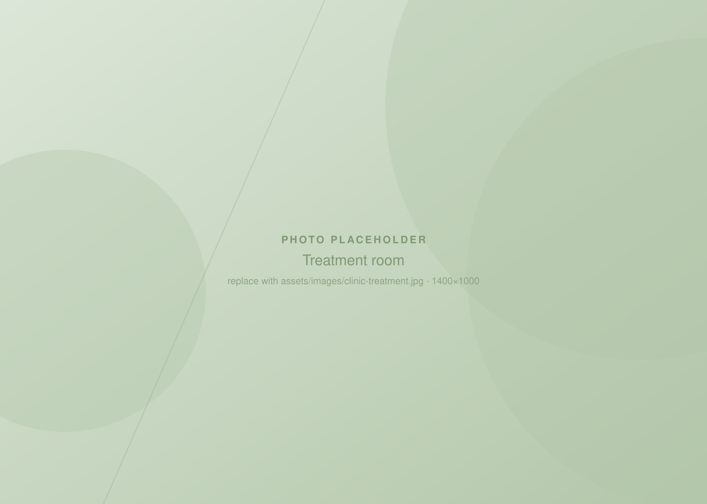
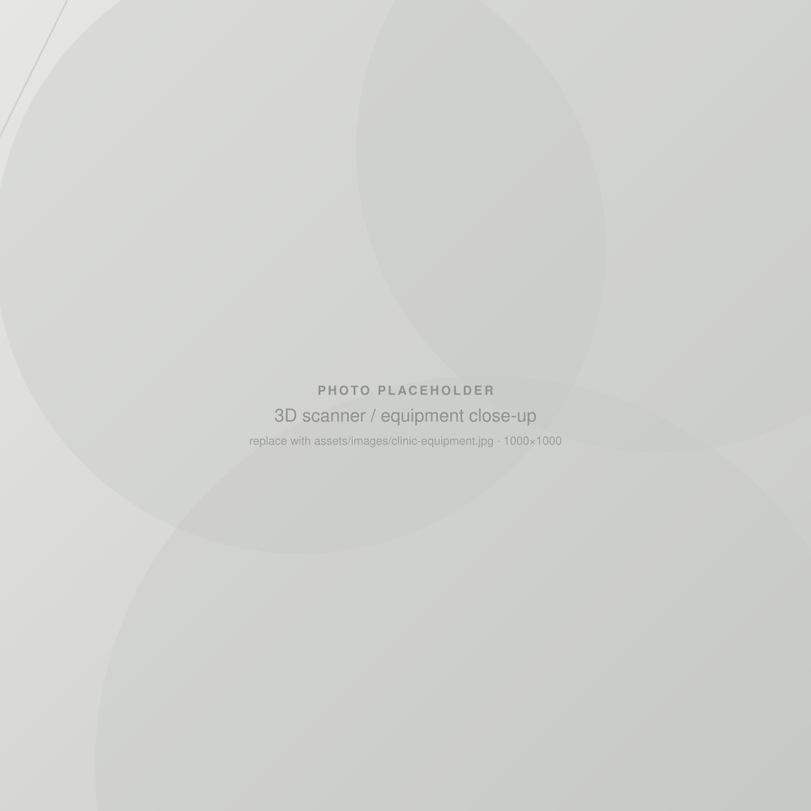
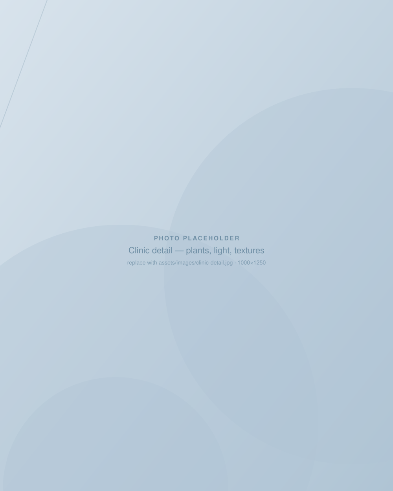
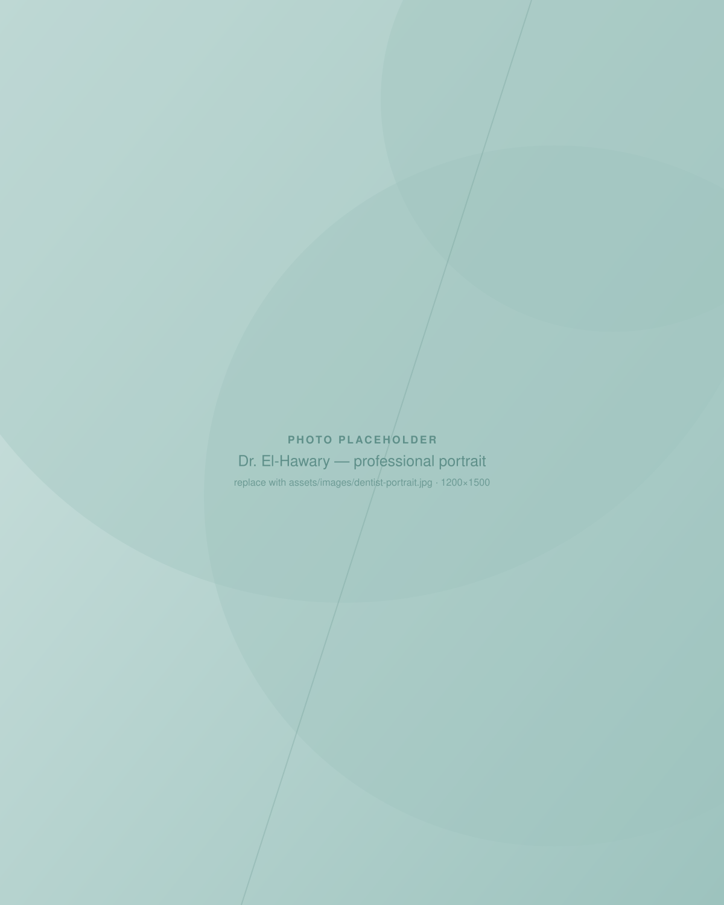
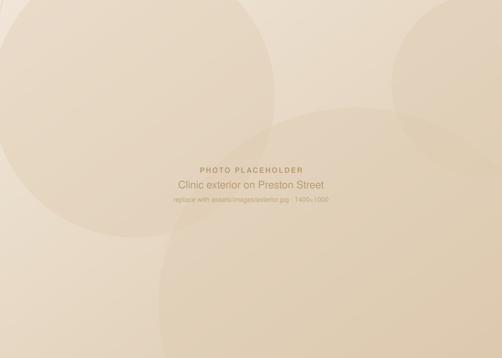
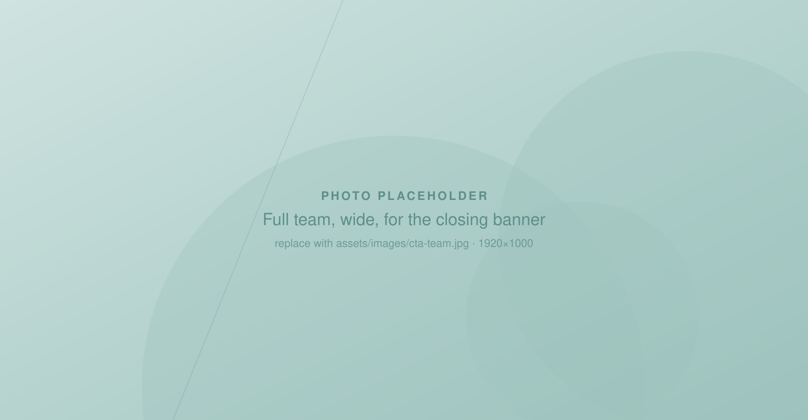

Modern dentistry.
Personalized care.
Exceptional dental care in the heart of Ottawa.


Your smile deserves thoughtful, personalized care.
We're a small, close-knit practice in Little Italy. Every visit starts with a conversation, moves at your pace, and ends with a plan you understand.
Whether it's been six months or fifteen years since your last appointment, you'll be met with warmth rather than judgment, and with the time it takes to do things well.
A comfortable place for your care.
Natural light, quiet rooms, and a screen on the ceiling. We designed the space so that the appointment itself feels calm.




Complete dental care.
Comprehensive care for you and your family.

General Dentistry
Checkups, cleanings, fillings, and night guards. The routine care that keeps small problems small.
Explore
Cosmetic Dentistry
Veneers and professional whitening, planned around the smile you actually want.
Explore
Restorative Dentistry
Crowns, implants, and extractions, guided by complimentary 3D scans.
Explore
Emergency Dentistry
Same-day appointments for pain, swelling, or a broken tooth. Call first thing and we'll fit you in.
Explore
Meet Dr. El-Hawary
Known for a calm, unhurried chairside manner that puts even the most nervous patients at ease.
Placeholder Short biography goes here: where Dr. El-Hawary trained, how long they have practised, and what drew them to dentistry.
"[Personal quote from Dr. El-Hawary about their approach to patient care.]"

Dentistry that puts people first.
The best dental care is unhurried, clearly explained, and shaped around the person in the chair.
- We talk first
Every visit begins with a conversation about what you're feeling and what you want.
- You set the pace
Raise a hand and we stop. Nothing happens before you're ready.
- Clear options, clear costs
You'll understand what we recommend, why, and what it will cost before anything begins.
- Modern tools, gentle hands
Complimentary 3D scans and digital planning mean fewer visits and less guesswork.
Patient experiences.
"I have crippling dentist anxiety and avoided dentists for 15 years. Every single person at Dow's Lake Dental has made it a bit easier to maintain my oral health."Vanessa K. · Google review
"From the moment you walk in you are greeted with a warm welcome and you are made to feel comfortable. You can tell they love what they do."Craig D. · Google review
"Best dentist I've ever been to. The reception, customer service and the dentistry itself is like no other."Suzanna V. · Google review

Conveniently located in Ottawa.
On Preston Street in Little Italy, a few blocks from Dow's Lake and a short walk from Carling Station.
- Address
- 484 Preston St, Ottawa, ON K1S 4N8
- Hours
Monday 9 AM - 5 PM Tuesday - Thursday 7:30 AM - 4 PM Friday 7:30 AM - 1 PM Weekend Closed
